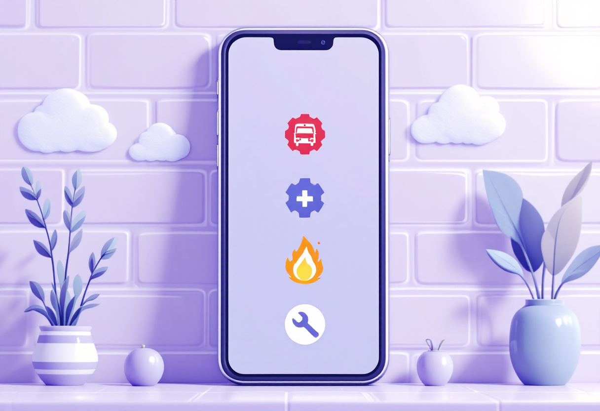
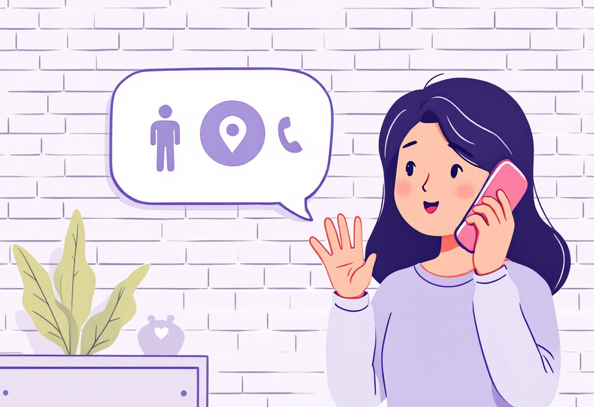
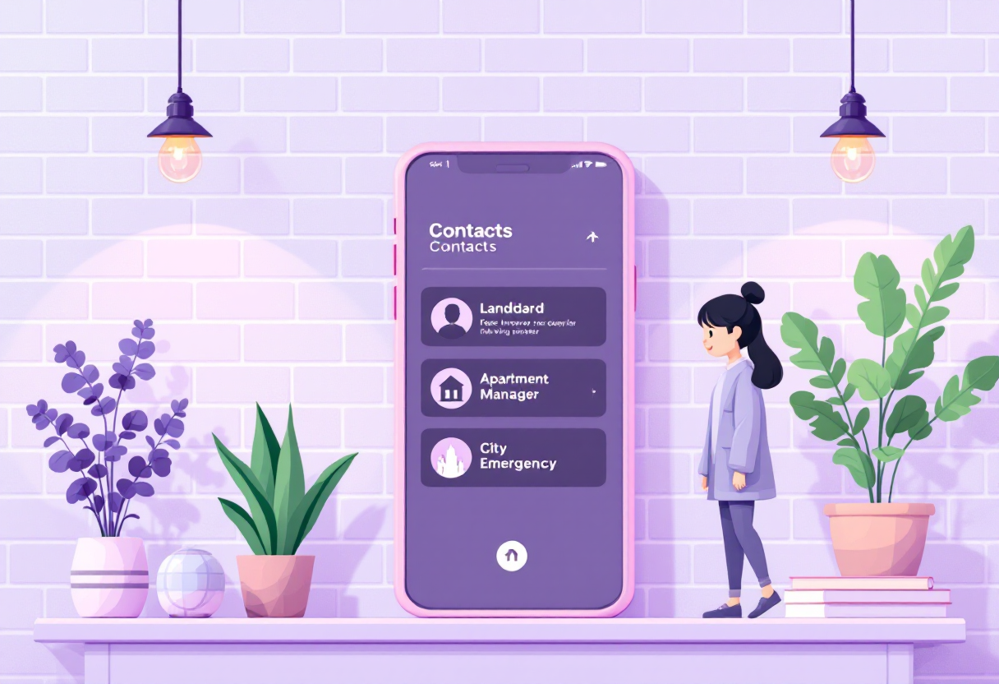
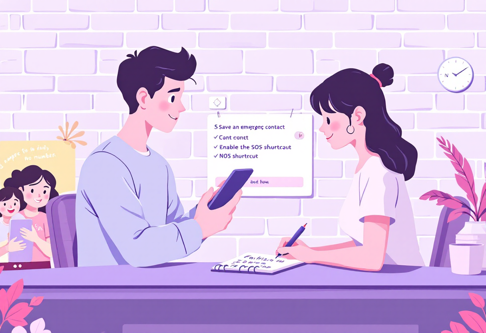

Екстрені контакти
Кому дзвонити і що сказати — номери служб, алгоритм виклику та як триматись в критичній ситуації.

Основні екстрені номери в Україні
Збережи ці номери в телефоні і запам'ятай найважливіший — 112.
- 112 — єдина служба екстреної допомоги (перенаправляє до потрібної служби).
- 101 — пожежна охорона.
- 102 — поліція.
- 103 — швидка медична допомога.
- 104 — аварійна газова служба.

Як правильно телефонувати до екстреної служби
При екстреному виклику важлива чітка і коротка інформація. Не панікуй — кажи по порядку.
- Що сталося — одним реченням: «Пожежа», «Людина непритомна», «Пограбування».
- Де — точна адреса: вулиця, номер будинку, під'їзд, поверх.
- Чи є постраждалі — скільки людей і в якому стані.
- Твоє ім'я і номер телефону — щоб перетелефонували при потребі.

Інші важливі контакти
Окрім аварійних служб, варто мати ще кілька номерів під рукою.
- 0-800-501-482 — гаряча лінія з психологічної підтримки (безкоштовно).
- Управляюча компанія або ОСББ — при аварії вдома (труби, електрика).
- Аварійна служба водоканалу свого міста.
- Контакт довіреного сусіда — хто може швидко відреагувати поруч.

Підготовка: що зробити заздалегідь
Краще витратити 15 хвилин зараз, ніж шукати номери в паніці потім.
- Збережи 112, 101, 103 у швидкому наборі телефону.
- Запиши ключові контакти на папері — на випадок розрядки телефону.
- Познайом своїх близьких з місцем, де зберігаються важливі контакти.
- Встанови функцію «SOS» на телефоні — більшість смартфонів її підтримує.